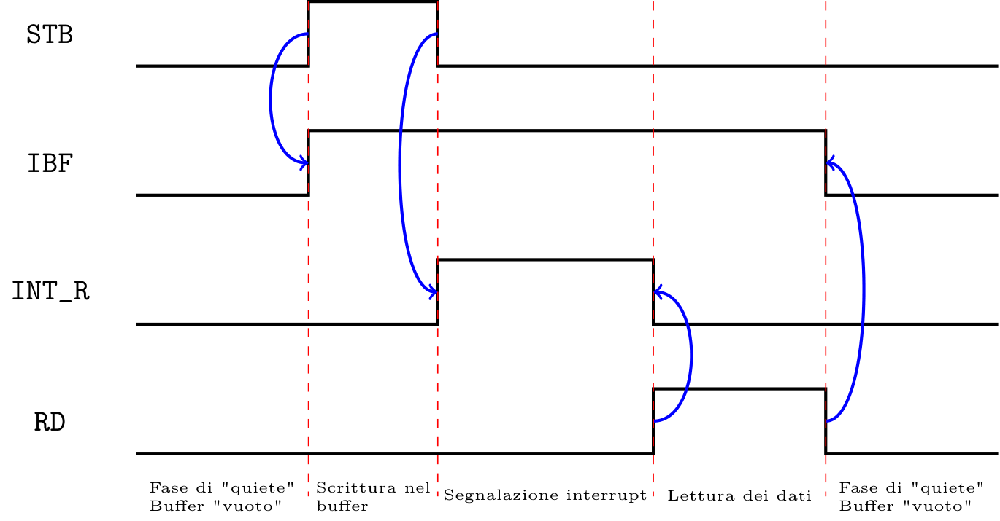
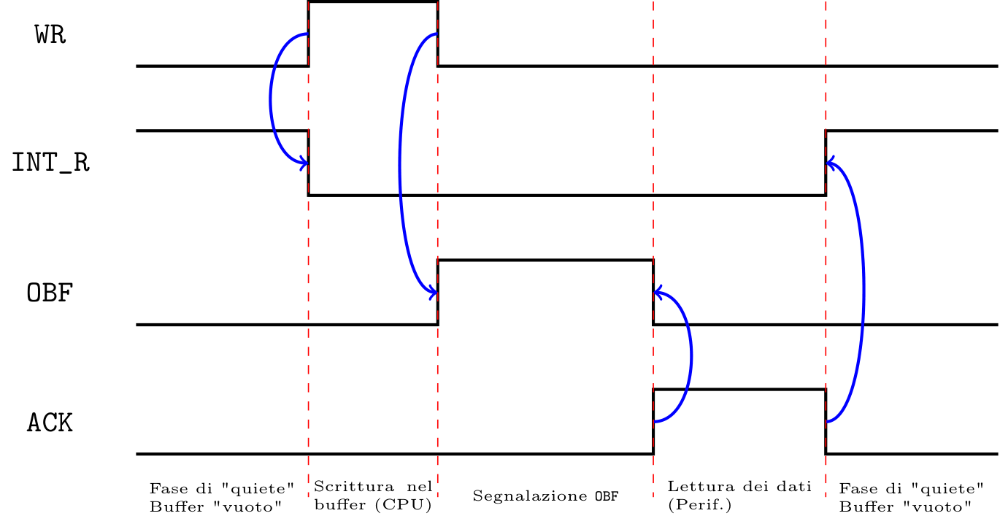
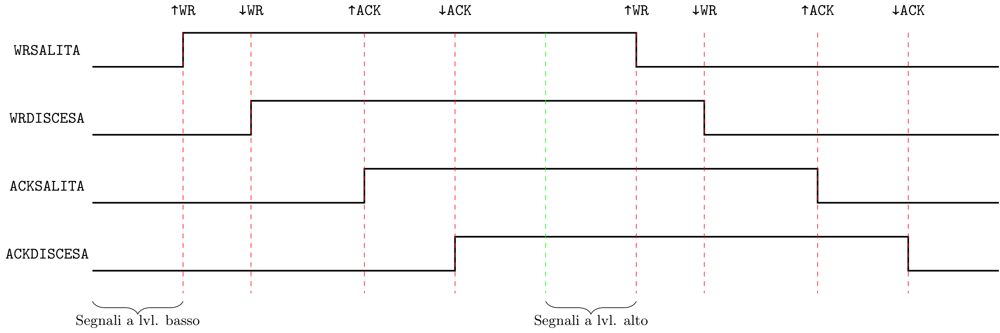
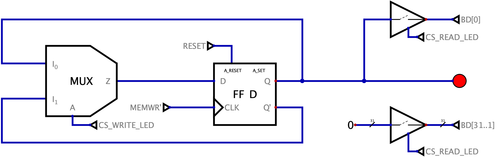

Definizione - Caratteristiche e segnali del microprocessore DLX
Il microprocessore DLX è caratterizzato da:
- un Data Bus di dimensione \( 32 \mathrm{ \, bit }\);
- un unico spazio di indirizzamento di \( 4 \mathrm{ \, GB }\) (ovvero \( {32}\) bit di indirizzo, che tuttavia diventano \( 29\), con \( 4\) segnali di Bus Enable a causa della grandezza del Data Bus).
- \( 32\) registri (da \( 32 \mathrm{ \, bit }\)) general purpose, indicati con (R0, R1, ..., R31). Di questi, il registro R0 non è sovrascribile e contiene la costante 0x00000000;
- \( 4\) registri speciali (sempre da \( 32 \mathrm{ \, bit }\)) non direttamente accedibili tramite istruzioni:
- il registro PC (Program Counter), che contiene l'indirizzo in memoria della prossima istruzione (a cui sarà poi effettuato il fetch). Ad ogni istruzione esso incrementa automaticamente di \( +4\);
- il registro IAR (Interrupt Address Register), in cui è depositato il Program Counter a seguito della ricezione di un segnale di Interrupt;
- il registro MAR (Memory Address Register), con il contenuto dell'Address Bus (che è modificato quindi durante i cicli di Bus);
- il registro MDR (Memory Data Register), che contiene il contenuto del Data Bus (modificato anch'esso durante i cicli di Bus).
- non sono presenti registri contenenti i flag impostati dall'ALU (Arithmetic Logic Unit);
- istruzioni a lunghezza fissa a \( 32 \mathrm{ \, bit }\) allineate (ovvero informazioni per la decodifica nelle stesse posizioni);
- modalità di accesso alla memoria indiretto;
- ordine di memorizzazione dei dati little-endian.
- un ingresso CLK per il segnale di clock;
- un ingresso RESET per il segnale di inizializzazione all'accensione;
- un'uscita per l'Address Bus di \( 30 \mathrm{ \, bit }\) (BA[31..2]);
- quattro uscite per i segnali di Bus Enable (BE0, BE1, BE2 e BE3);
- due uscite RD e WR per i segnali di controllo MEMRD e MEMWR;
- due ingressi READY e INT per i segnali di controllo omonimi;
- un ingresso/uscita per il Data Bus a \( 32 \mathrm{ \, bit }\).
- \( 8 \mathrm{ \, bit }\), ovvero un Byte;
- \( 16 \mathrm{ \, bit }\), ovvero una Half-Word;
- \( 32 \mathrm{ \, bit }\), ovvero una Word.
- nel caso di interi unsigned si aggiungono nelle posizioni più significative il numero di 0 necessari per raggiungere i \( 32 \mathrm{ \, bit }\);
- nel caso di interi signed si aggiungono nelle posizioni più significative la cifra più significativa del numero letto per raggiungere i \( 32 \mathrm{ \, bit }\) (in questo modo è possibile mantenere il segno).
Definizione - Formato delle istruzioni
Nel linguaggio assembly per DLX esistono tre tipi di formati di istruzioni che si differenziano in base agli "argomenti passati": Gli \( 11 \mathrm{ \, bit }\) di estensione sono utili per estendere l'Operation Code e per la creazione di ulteriori istruzioni. Istruzioni I Le istruzioni del tipo I comprendono le istruzioni di load, store, branch, di operazioni aritmetiche, logiche, di set tra un registro, ecc.. Una tipica istruzione I sarà quindi così formata:
- istruzioni del tipo R (da Register) caratterizzate da un registro di destinazione e due registri operandi;
- istruzioni del tipo I (da Immediate) caratterizzate da un registro di destinazione, un registro operando e un immediato (una costante) a \( 16 \mathrm{ \, bit }\);
- istruzioni del tipo J (da Jump) caratterizzate da un immediato a \( 26 \mathrm{ \, bit }\).

Tale immediato, codificato con \( 16\) bit per motivi di spazio, per essere utilizzato dalla CPU dovrà essere esteso a \( 32 \mathrm{ \, bit }\) (tale estensione potrà essere fatta sia con segno che senza in base alle necessità). Istruzioni J Le istruzioni del tipo J comprendono le istruzioni di Jump. Una tipica istruzione J sarà quindi uguale a:

Osservazioni personali - Giusto per capirci...
La ripartizione dei bit non è fedele alla realtà: ad esempio l'OPCode potrebbe essere suddiviso in due intervalli non contigui. Ciò che è importante, tuttavia, è l'allineamento di questi campi (ad esempio, se l'OPCode occupa i bit nelle posizioni 31 30 29 28 25 24, si ha che deve occupare queste posizioni in ogni istruzione, al fine di rendere più agevole la decodifica).
Definizione - Istruzioni per il Data Transfer
Le istruzioni per il Data Transfer comprendono tutte quelle istruzioni che permettono l'interazione con memorie e periferiche esterne.
Considerando RD un registro destinazione, RS un registro sorgente, RSP un registro speciale e Imm16 un valore "immediato" a \( 16 \mathrm{ \, bit }\) si ha:
Considerando RD un registro destinazione, RS un registro sorgente, RSP un registro speciale e Imm16 un valore "immediato" a \( 16 \mathrm{ \, bit }\) si ha:
- le istruzioni per leggere un dato ad un indirizzo della memoria (ottenuto sommando il contenuto del registro all'immediato signed) e inserirlo nel registro RD, in particolare
- LW RD, Imm16(RS) (Load Word) permette la lettura di interi signed a \( 32 \mathrm{ \, bit }\). Affinchè tale istruzione possa essere eseguita correttamente, è necessario che l'indirizzo finale sia un indirizzo divisibile per \( 4\) (in quanto è necessario trasportare \( 4 \mathrm{ \, Byte }\) e attivare quindi tutte e \( 4\) le memorie);
- LH RD, Imm16(RS) (Load Half Word) permette la lettura di interi signed a \( 16 \mathrm{ \, bit }\) (si avrà quindi un'estensione a \( 32 \mathrm{ \, bit }\) con segno). Affinchè tale istruzione possa essere eseguita correttamente, è necessario che l'indirizzo finale sia un indirizzo divisibile per \( 2\);
- LHU RD, Imm16(RS) (Load Half Word Unsigned) permette la lettura di interi unsigned a \( 16 \mathrm{ \, bit }\) (si avrà quindi un'estensione a \( 32 \mathrm{ \, bit }\) senza segno);
- LB RD, Imm16(RS) (Load Byte) permette la lettura di interi signed a \( 8 \mathrm{ \, bit }\);
- LBU RD, Imm16(RS) (Load Byte Unsigned) permette la lettura di interi signed a \( 8 \mathrm{ \, bit }\);
- le istruzioni per scrivere il dato contenuto nel registro RS ad un indirizzo della memoria, in particolare
- SW RS, Imm16(RS) (Store Word) permette la scrittura di interi signed a \( 32 \mathrm{ \, bit }\). Affinchè tale istruzione possa essere eseguita correttamente, è necessario che l'indirizzo finale sia un indirizzo divisibile per \( 4\) (in quanto è necessario trasportare \( 4 \mathrm{ \, Byte }\) e attivare quindi tutte e \( 4\) le memorie);
- SH RS, Imm16(RS) (Store Half Word) permette la scrittura di interi signed a \( 16 \mathrm{ \, bit }\) (si avrà quindi un'estensione a \( 32 \mathrm{ \, bit }\) con segno). Affinchè tale istruzione possa essere eseguita correttamente, è necessario che l'indirizzo finale sia un indirizzo divisibile per \( 2\);
- SB RS, Imm16(RS) (Store Byte) permette la scrittura di interi signed a \( 8 \mathrm{ \, bit }\);
- MOVS2I RS, RSP è un istruzione per copiare il contenuto di un registro general purpose RS a un registro speciale RSP;
- MOVI2S RSP, RD è un istruzione per copiare il contenuto di un registro speciale RSP a un registro general purpose RS;
Definizione - Istruzioni aritmetiche e logiche
Le istruzioni aritmetiche e logiche comprendono tutte quelle istruzioni che permettono di effettuare calcoli e operazioni.
Considerando RD un registro destinazione, RS un registro sorgente e Imm16 un valore "immediato" a \( 16 \mathrm{ \, bit }\) si ha:
Considerando RD un registro destinazione, RS un registro sorgente e Imm16 un valore "immediato" a \( 16 \mathrm{ \, bit }\) si ha:
- le istruzioni aritmetiche di tipo R (ovvero che "copiano" il risultato dell'operazione tra i due registri RS nel registro RD), in particolare
- ADD RD, RS, RS per la somma tra numeri interi con segno;
- ADDU RD, RS, RS (ADD Unsigned) per la somma tra numeri interi senza segno;
- SUB RD, RS, RS (SUBtract) per la differenza tra numeri interi con segno;
- SUBU RD, RS, RS (SUBtract Unsigned) per la differenza tra numeri interi senza segno;
- le istruzioni aritmetiche di tipo I (ovvero che "copiano" il risultato dell'operazione tra un registro e un immediato (esteso a \( 32 \mathrm{ \, bit }\) con o senza segno in base all'istruzione)), in particolare
- ADDI RD, RS, Imm16 (ADD Immediate) per la somma tra numeri interi con segno;
- ADDUI RD, RS, Imm16 (ADD Unsigned Immediate) per la somma tra numeri interi senza segno;
- SUBI RD, RS, Imm16 (SUBtract Immediate) per la differenza tra numeri interi con segno;
- SUBUI RD, RS, Imm16 (SUBtract Unsigned Immediate) per la differenza tra numeri interi senza segno;
- le istruzioni logiche di tipo R (ovvero che "copiano" il risultato dell'operazione tra i due registri RS nel registro RD), in particolare
- AND RD, RS, RS per l'AND bit-a-bit;
- OR RD, RS, RS per l'OR bit-a-bit;
- XOR RD, RS, RS per lo XOR bit-a-bit;
- le istruzioni logiche di tipo I (ovvero che "copiano" il risultato dell'operazione tra un registro e un immediato (esteso a \( 32 \mathrm{ \, bit }\) sempre senza segno), in particolare
- ANDI RD, RS, Imm16 (AND Immediate) per l'AND bit-a-bit;
- ORI RD, RS, Imm16 (OR Immediate) per l'OR bit-a-bit;
- XORI RD, RS, Imm16 (XOR Immediate) per lo XOR bit-a-bit;
- le istruzioni di shift di tipo R (ovvero che effettuano lo scorrimento del contenuto del primo registro RS delle posizioni indicate nel contenuto del secondo registro RS e "copiano" il risultato nel registro RD), in particolare
- SLL RD, RS, RS (Shift Left Logical) per lo shift logico verso sinistra;
- SRL RD, RS, RS (Shift Right Logical) per lo shift logico verso destra;
- SRA RD, RS, RS (Shift Right Arithmetical) per lo shift aritmetico verso destra;
- le istruzioni di shift di tipo I (ovvero che effettuano lo scorrimento del contenuto del primo registro RS delle posizioni indicate dall'immediato e "copiano" il risultato nel registro RD), in particolare
- SLLI RD, RS, Imm16 (Shift Left Logical Immediate) per lo shift logico verso sinistra;
- SRLI RD, RS, Imm16 (Shift Right Logical Immediate) per lo shift logico verso destra;
- SRAI RD, RS, Imm16 (Shift Right Arithmetical Immediate) per lo shift aritmetico verso destra;
- LHI RD, Imm16 (Load High-Word Immediate) che permette il caricamento nel registro RD dell'immediato, posizionandolo però nelle posizioni più significative (e "riempiendo" il resto con 0).
Definizione - Istruzioni di controllo
Le istruzioni di controllo comprendono le istruzioni di Set, di salto condizionato e non, ecc.. Considerando RD un registro destinazione, RS un registro sorgente, Imm16 un valore "immediato" a \( 16 \mathrm{ \, bit }\), Imm26 un valore "immediato" a \( 26 \mathrm{ \, bit }\) si ha:
- le istruzioni di set di tipo R (ovvero che copiano nel registro RD se una condizione è rispettata (valore 1) o meno (valore 0) tra i due valori contenuti nei registri RS), in particolare
- SLT RD, RS, RS (Set Lesser Than) per verificare che il contenuto del primo registro sia minore "stretto" del secondo (confronto tra numeri con segno);
- SLTU RD, RS, RS (Set Lesser Than Unsigned) per verificare che il contenuto del primo registro sia minore "stretto" del secondo (confronto tra numeri senza segno);
- SGT RD, RS, RS (Set Greater Than) per verificare che il contenuto del primo registro sia maggiore "stretto" del secondo (confronto tra numeri con segno);
- SGTU RD, RS, RS (Set Greater Than Unsigned) per verificare che il contenuto del primo registro sia maggiore "stretto" del secondo (confronto tra numeri senza segno);
- SLE RD, RS, RS (Set Lesser Equal) per verificare che il contenuto del primo registro sia minore o uguale del secondo (confronto tra numeri con segno);
- SLEU RD, RS, RS (Set Lesser Equal Unsigned) per verificare che il contenuto del primo registro sia minore o uguale del secondo (confronto tra numeri senza segno);
- SGE RD, RS, RS (Set Greater Equal) per verificare che il contenuto del primo registro sia maggiore o uguale del secondo (confronto tra numeri con segno);
- SGEU RD, RS, RS (Set Greater Equal Unsigned) per verificare che il contenuto del primo registro sia maggiore o uguale del secondo (confronto tra numeri senza segno);
- SEQ RD, RS, RS (Set EQual) per verificare che il contenuto del primo registro sia uguale al secondo (confronto tra numeri con segno);
- SEQU RD, RS, RS (Set EQual Unsigned) per verificare che il contenuto del primo registro sia uguale al secondo (confronto tra numeri senza segno);
- SNE RD, RS, RS (Set Not Equal) per verificare che il contenuto del primo registro sia diverso dal secondo (confronto tra numeri con segno);
- SNEU RD, RS, RS (Set Not Equal Unsigned) per verificare che il contenuto del primo registro sia diverso dal secondo (confronto tra numeri senza segno);
- le istruzioni di set di tipo I (ovvero che copiano nel registro RD se una condizione è rispettata o meno tra il valore del registro RS e l'immediato esteso con o senza segno), in particolare
- SLTI RD, RS, Imm16 (Set Lesser Than Immediate) per verificare che il contenuto del primo registro sia minore "stretto" dell'immediato (confronto tra numeri con segno);
- SLTUI RD, RS, Imm16 (Set Lesser Than Unsigned Immediate) per verificare che il contenuto del primo registro sia minore "stretto" dell'immediato (confronto tra numeri senza segno);
- SGTI RD, RS, Imm16 (Set Greater Than Immediate) per verificare che il contenuto del primo registro sia maggiore "stretto" dell'immediato (confronto tra numeri con segno);
- SGTUI RD, RS, Imm16 (Set Greater Than Unsigned Immediate) per verificare che il contenuto del primo registro sia maggiore "stretto" dell'immediato (confronto tra numeri senza segno);
- SLEI RD, RS, Imm16 (Set Lesser Equal Immediate) per verificare che il contenuto del primo registro sia minore o uguale dell'immediato (confronto tra numeri con segno);
- SLEUI RD, RS, Imm16 (Set Lesser Equal Unsigned Immediate) per verificare che il contenuto del primo registro sia minore o uguale dell'immediato (confronto tra numeri senza segno);
- SGEI RD, RS, Imm16 (Set Greater Equal Immediate) per verificare che il contenuto del primo registro sia maggiore o uguale dell'immediato (confronto tra numeri con segno);
- SGEUI RD, RS, Imm16 (Set Greater Equal Unsigned Immediate) per verificare che il contenuto del primo registro sia maggiore o uguale dell'immediato (confronto tra numeri senza segno);
- SEQI RD, RS, Imm16 (Set EQual Immediate) per verificare che il contenuto del primo registro sia uguale all'immediato (confronto tra numeri con segno);
- SEQUI RD, RS, Imm16 (Set EQual Unsigned Immediate) per verificare che il contenuto del primo registro sia uguale all'immediato (confronto tra numeri senza segno);
- SNEI RD, RS, Imm16 (Set Not Equal Immediate) per verificare che il contenuto del primo registro sia diverso dall'immediato (confronto tra numeri con segno);
- SNEUI RD, RS, Imm16 (Set Not Equal Unsigned Immediate) per verificare che il contenuto del primo registro sia diverso dall'immediato (confronto tra numeri senza segno);
- BEQZ RS, Imm16 (Branch if EQual Zero) per il salto condizionato (se in RS è presente il valore 0) all'istruzione PC-relativa sommata all'immediato (ricordando che il Program Counter punta all'indirizzo successivo da eseguire);
- BNEZ RS, Imm16 (Branch if Not Equal Zero) per il salto condizionato (se in RS non è presente il valore 0) all'istruzione PC-relativa sommata all'immediato (ricordando che il Program Counter punta all'indirizzo successivo da eseguire);
- J Imm26 (Jump) per il salto incodizionato all'indirizzo PC-relativo sommato all'immediato;
- JR RS (Jump Register) per il salto incodizionato all'indirizzo assoluto contenuto nel registro RS;
- JALR Imm26 (Jump And Link) per il salto incodizionato con ritorno (ovvero è salvato il valore del Program Counter nel registro R31) all'indirizzo PC-relativo sommato all'immediato;
- JALR RS (Jump And Link Register) per il salto incodizionato con ritorno (ovvero è salvato il valore del Program Counter nel registro R31) all'indirizzo assoluto contenuto nel registro RS
Esempio - Codice assembly per la somma degli elementi in un intervallo contiguo di memoria
Considerando un processore DLX nel cui spazio di indirizzamento è mappata una memoria A all'indirizzo 0x0800 contenente \( 8\) numeri unsigned memorizzati come Byte, scrivere il codice al cui termine dell'esecuzione posiziona nel registro R30 il risultato della somma di tutti gli otto numeri presenti in memoria. Considerazioni Considerando la richiesta, si ha che la risoluzione di questo problema può ricondursi all'iterazione di un comportamento per \( 8\) volte. Il metodo più efficiente e scalabile è considerare la creazione di un ciclo while. Ragionando in questo modo, saranno necessari:
- un accumulatore in cui sarà memorizzata la somma;
- un contatore "indice" che "tiene conto" di quanti numeri si sono già sommati (e permette quindi l'accesso al successivo indirizzo di memoria).
ADD R1, R0, R0 ; Accumulatore R1 = 0
ADD R2, R0, R0 ; Indice R2 = 0
ADD R3, R0, R0 ; Loop Condition Register R3 = 0
ADD R4, R0, R0 ; Storage R4 = 0
ADD R30, R0, R0 ; Risultato R30 = 0
SLOOP: SLTUI R3, R2, 0x0008 ; R3 = R2 < 8
BEQZ R3, ELOOP ; Se R3 = 0 (False), salta a ELOOP
LBU R4, 0x0800(R2) ; Storage R4 = A[0x0800 + R2]
ADDU R1, R1, R3 ; Accumulatore R1 = R1 + R4
ADDU R2, R2, 0x0001 ; Indice R2 = R2 + 1
J SLOOP ; Salto incodizionato a SLOOP
ELOOP: ADDU R30, R0, R1 ; Risultato R30 = R1- all'inizio si inizializzano inutilmente i registri R3, R4, R30;
- il ciclo while è una struttura generica e non "modellata" perfettamente su questo problema.
ADD R1, R0, R0 ; Accumulatore R1 = 0
ADDI R2, R0, 0x0008 ; Indice R2 = 8
LOOP: SUBUI R2, R2, 0x0001 ; R2 = R2 - 1
LBU R3, 0x0800(R1) ; Storage R3 = A[0x0800 + R2]
ADDU R1, R1, R3 ; R1 = R1 + R3
BNEZ R2, LOOP ; Se R2 != 0, salta a LOOP
ADDU R30, R0, R1 ; Risultato R30 = R1Esempio - Progetto di sistema basato su DLX con tre dispositivi, un LED e un segnale logico
Progettare un sistema basato sul processore DLX con:
Consideriamo la EPROM da \( 512 \mathrm{ \, MB }\), essa occuperà \( 2^{9} \cdot 2^{20} = 2^{29}\) indirizzi che dovranno essere posizionati agli indirizzi bassi. Quindi si ha
Anche per "comandare" il LED sono sufficienti due segnali, uno per invertire lo stato e uno per leggere lo stato corrente, da cui Le istruzioni per la lettura del valore di STARTUP saranno Le istruzioni per la lettura dello stato del LED saranno
Le istruzioni per la lettura del valore di STARTUP saranno Le istruzioni per la lettura dello stato del LED saranno
- \( 512 \mathrm{ \, MB }\) di EPROM mappata agli indirizzi bassi;
- \( 1 \mathrm{ \, GB }\) di RAM mappata all'indirizzo 0x40000000;
- \( 512 \mathrm{ \, MB }\) di RAM mappata agli indirizzi alti;
- impostare e leggere il livello logico 0 o 1 di un segnale detto STARTUP mappato all'indirizzo 0xC0000000, inizialmente impostato al valore 1;
- invertire lo stato di un LED, inizialmente spento, mappato all'indirizzo 0x90000000, prevedendo anche la possibilità di poterne leggere lo stato.
Consideriamo la EPROM da \( 512 \mathrm{ \, MB }\), essa occuperà \( 2^{9} \cdot 2^{20} = 2^{29}\) indirizzi che dovranno essere posizionati agli indirizzi bassi. Quindi si ha
EPROM = [ 0000 0000h, 0000 0000h + 229 ] = [ 0000 0000h, 0000 0000h + 1FFF FFFFh ] = [ 0000 0000h, 1FFF FFFFh ]
Consideriamo ora la RAM da \( 1 \mathrm{ \, GB }\) che occupa \( 2^{30}\) indirizzi, che posizionati a partire dall'indirizzo 4000 0000h comporteranno: RAM1 GB = [ 4000 0000h, 4000 0000h + 230 ] = [ 4000 0000h, 4000 0000h + 3FFF FFFFh ] = [ 4000 0000h, 7FFF FFFFh ]
Considerando ora la RAM da \( 512 \mathrm{ \, MB }\), essa occupa \( 2^{29}\) indirizzi, che posizionati agli indirizzi alti, comporteranno: RAM512 MB = [ FFFF FFFFh - 229 , FFFF FFFFh ] = [ FFFF FFFFh - 1FFF FFFFh, FFFF FFFFh ] = [ E000 0000h, FFFF FFFFh ]
Consideriamo inoltre gli indirizzi utili per gestire le istruzioni. Per il segnale STARTUP saranno necessari due indirizzi, uno per la lettura e uno per la scrittura, ovvero STARTUP_INSTR = [ C000 0000h, C000 0000h + 2 · 0000 0004h ] = [ C000 0000h, C000 0008h ]
in particolare, utilizzeremo gli indirizzi 0xC0000000 per l'istruzione di lettura e 0xC0000004 per l'istruzione di scrittura (dedichiamo quattro indirizzi a istruzione per allinearlo al sistema a \( 32 \mathrm{ \, bit }\)). Anche per "comandare" il LED sono sufficienti due segnali, uno per invertire lo stato e uno per leggere lo stato corrente, da cui
LED_INSTR = [ 9000 0000h, 9000 0000h + 2 · 0000 0004h ] = [ 9000 0000h, 9000 0008h ]
in particolare utilizzeremo l'indirizzo 0x90000000 per l'istruzione di lettura e 0x9000004 per l'inversione. Calcolo dei chip select Ora che abbiamo suddiviso lo spazio di indirizzamento, è possibile procedere con il calcolo dei Chip Select - per la EPROM da \( 512 \mathrm{ \, MB }\) (quindi \( 2^{29}\) indirizzi), sarà divisa in quattro EPROM da \( 128 \mathrm{ \, MB }\) (\( 2^{27}\) indirizzi) che "esiste" (dato che esistono tutte le potenze del \( 2\)) e comporterà quattro segnali di chip select, ovvero CS_EPROM_0, CS_EPROM_1, CS_EPROM_2, CS_EPROM_3;
- la RAM da \( 1 \mathrm{ \, GB }\) (quindi \( 2^{30}\) indirizzi) si ha che non "esiste" in questa taglia o in taglie grandi un quarto (in quanto sono disponibili solo taglie di RAM grandi "potenze dispari" del \( 2\)). Saranno quindi necessarie otto RAM da \( 128 \mathrm{ \, GB }\) e i segnali di chip select CS_RAM_1GB_L_0, CS_RAM_1GB_L_1, CS_RAM_1GB_L_2, CS_RAM_1GB_L_3, CS_RAM_1GB_H_0, CS_RAM_1GB_H_1, CS_RAM_1GB_H_2, CS_RAM_1GB_H_3. Inoltre, rimodellando l'intervallo di indirizzamento avremo RAM1 GB_L = [ 4000 0000h, 4000 0000h + 229 ] = [ 4000 0000h, 4000 0000h + 1FFF FFFFh ] = [ 4000 0000h, 5FFF FFFFh ]
RAM1 GB_H = [ 7FFF FFFFh - 229, 7FFF FFFFh ] = [ 7FFF FFFFh - 1FFF FFFFh, 7FFF FFFFh ] = [ 6000 0000h, 7FFF FFFFh ] - per la RAM da \( 512 \mathrm{ \, MB }\) (quindi \( 2^{29}\) indirizzi), sarà divisa in quattro RAM da \( 128 \mathrm{ \, MB }\) (\( 2^{27}\) indirizzi) che "esiste" e comporterà quattro segnali di chip select, ovvero CS_RAM_512MB_0, CS_RAM_512MB_1, CS_RAM_512MB_2, CS_RAM_512MB_3;
- per le istruzioni legate al segnale STARTUP saranno necessari due segnali, ovvero CS_READ_STARTUP e CS_WRITE_STARTUP;
- per le istruzioni legate al LED saranno necessari due segnali, ovvero CS_READ_LED e CS_WRITE_LED.
- nella prima metà dello spazio di indirizzamento sono presenti due dispositivi, ovvero la RAM da \( 1 \mathrm{ \, GB }\) e la EPROM, da cui si avrà quindi che:
- il bit BA[31] è necessario per discriminare tra le due metà dello spazio di indirizzamento;
- il bit BA[30] è necessario per discriminare tra RAM e EPROM;
- il bit BA[29] è necessario per discriminare quale delle due RAM attivare.
CS_EPROM_0 = BA[31] · BA[30] · BE0
CS_EPROM_1 = BA[31] · BA[30] · BE1
CS_EPROM_2 = BA[31] · BA[30] · BE2
CS_EPROM_3 = BA[31] · BA[30] · BE3
CS_RAM_1GB_L_0 = BA[31] · BA[30] · BA[29] · BE0
CS_RAM_1GB_L_1 = BA[31] · BA[30] · BA[29] · BE1
CS_RAM_1GB_L_2 = BA[31] · BA[30] · BA[29] · BE2
CS_RAM_1GB_L_3 = BA[31] · BA[30] · BA[29] · BE3
CS_RAM_1GB_H_0 = BA[31] · BA[30] · BA[29] · BE0
CS_RAM_1GB_H_1 = BA[31] · BA[30] · BA[29] · BE1
CS_RAM_1GB_H_2 = BA[31] · BA[30] · BA[29] · BE2
CS_RAM_1GB_H_3 = BA[31] · BA[30] · BA[29] · BE3 - nella seconda metà dello spazio di indirizzamento sono presenti una RAM da \( 512 \mathrm{ \, MB }\), le due istruzioni per comandare il segnale STARTUP e le due istruzioni per gestire il LED, da cui si avrà quindi che:
- il bit BA[31] è necessario per discriminare tra le due metà dello spazio di indirizzamento;
- i bit BA[30] e BA[29] sono necessari per discriminare tra RAM, istruzioni per il segnale STARTUP e istruzioni per il LED;
- il bit BA[2] è necessario nei comandi per discriminare lettura e scrittura.
CS_READ_LED = BA[31] · BA[30] · BA[29] · BA[2] · MEMRD
CS_WRITE_LED = BA[31] · BA[30] · BA[29] · BA[2]
CS_READ_STARTUP = BA[31] · BA[30] · BA[29] · BA[2] · MEMRD
CS_WRITE_STARTUP = BA[31] · BA[30] · BA[29]· BA[2] · MEMWR
CS_RAM_512MB_0 = BA[31] · BA[30] · BA[29] · BE0
CS_RAM_512MB_1 = BA[31] · BA[30] · BA[29] · BE1
CS_RAM_512MB_2 = BA[31] · BA[30] · BA[29] · BE2
CS_RAM_512MB_3 = BA[31] · BA[30] · BA[29] · BE3
della \( i\)-esima RAM (della memoria da \( 512 \mathrm{ \, MB }\))
e della \( i\)-esima RAM_L (e in maniera non dissimile per la RAM_H)
Segnale STARTUP Per il segnale STARTUP, è possibile utilizzare un Latch CD nel seguente modo:
LHI R1, 0xC000 ; R1 = 0xC000 0000 (Indirizzo istruzioni)
LW R3, 0x0000(R1) ; LetturaLHI R1, 0xC000 ; R1 = 0xC000 0000 (Indirizzo istruzioni)
ADD R2, R0, 0x0001 ; R2 = 1
SW R2, 0x0004(R1) ; Scrittura del valore 1
LHI R1, 0x9000 ; R1 = 0x9000 0000 (Indirizzo istruzioni)
LW R2, 0x0000(R1) ; LetturaLHI R1, 0x9000 ; R1 = 0x9000 0000 (Indirizzo istruzioni)
SW R2, 0x0004(R1) ; Scrittura (Inversione)